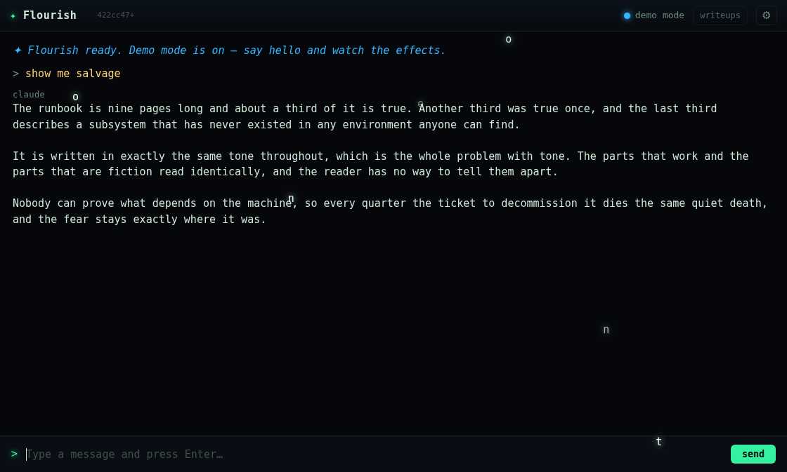
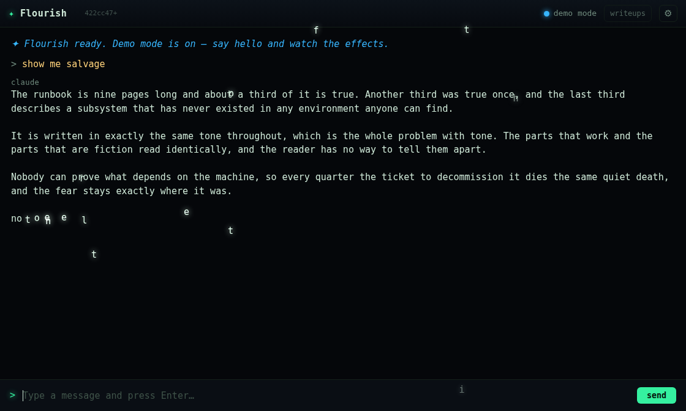
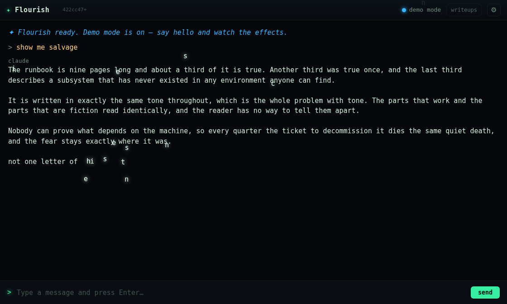

"the shatter effect isn't good. get rid of that one. add a new effect where the incoming response letters are copied and flown in from elsewhere in the window."
Two jobs. The second one is the interesting one, and the word that decides it is copied. A letter flying in from a random point isn't copied from anything — it's just a fly-in animation. Copied implies an original. So salvage lifts each letter off a real matching letter already on screen: the e in the new line is fetched from an e in something already said. The meaning falls straight out of the mechanism — a line with no new material in it, assembled from what was already lying around.

o, n, t, a — have lifted off the paragraphs above and are crossing the window toward the boxes they're about to fill.
no has landed; the rest are inbound.
Some letters can't be salvaged: a rare character, punctuation, or the first reply of a session with an empty transcript above it. Those need a fallback, and the only sane fallback is to fly in from a random point instead.
That fallback is visually identical to the effect working. Letters still converge, the line still assembles, the screenshot is still beautiful. An implementation whose source lookup returned nothing — ever, for any character — would photograph exactly like a correct one.
This repo has already shipped that precise bug with a picture attached. apophenia's committed reference shot was of its own fallback path, and fx-shots exits 0 no matter what is in the PNG. So the rule here isn't "take a screenshot to prove it." It's the picture is not the evidence. The evidence has to be a count.
tools/salvage-probe.js streams a real reply through the real renderer and, for every flier, asks the DOM — not salvage — what character is really sitting at that coordinate, via caretRangeFromPoint. It's an independent oracle: a broken _source() can't fool it, because it never consults _source().
e where this e claims to have come from?e where this e came to rest?The second isn't a bonus. Both endpoints are viewport coordinates of text that is still scrolling — the typewriter appends below while the scroll spring chases it — so a flier that ignored drift would land on whatever line had slid into its target's old position. That reads as sloppy rendering rather than as a bug, which is exactly why it needs a number.
=== counts === fliers: 31 found a real source: 31 fell back to a random point: 0 origin really had that char: 31/31 landed on that char: 31/31 that landed characters revealed: 38/38 === verdict === actually salvaging, not just flying: yes landing on target (drift corrected): yes every character revealed: yes
A green probe on working code proves nothing on its own — that's the whole lesson of this repo's history. So the source lookup was deliberately sabotaged (_source() forced to return null) and the probe re-run:
=== counts (source-finding sabotaged) === fliers: 31 <-- still flies found a real source: 0 fell back to a random point: 31 origin really had that char: 0/31 landed on that char: 31/31 <-- still lands perfectly === verdict === actually salvaging, not just flying: NO — this is the fallback path wearing the effect
Read the two columns that didn't change. With the effect completely gutted, 31 letters still fly, still arc, still land dead on their targets. It looks perfect. A screenshot of that run would have passed review, exactly as apophenia's did. Only found a real source: 0 gives it away.
salvage characters start at opacity: 0 and are only turned on as their copies land, which creates a failure mode worse than the effect not painting: the sentence would be present in the DOM, counted by innerText, and invisible on screen. Every existing smoke assertion is blind to opacity. Sabotaging the reveal proves it:
ok - the whole reply lands, first word to last <-- green, with 55 of 65 characters invisible ok - the salvage span rendered its characters at all FAIL - salvage revealed every character (10/65 visible)
The pre-existing checks sail straight past it. tools/smoke.js now asks the computed style instead — opacity is precisely the thing innerText cannot see.
shatter was turned down on the merits: it looked like a stock asset rather than like this terminal, and said nothing shake and glitch don't say better. But deleting the name would have been a bug in its own right, and a nastier one than the effect ever was.
A name does two jobs. It resolves to something — that's the one you'd audit. It also gets recognised, and therefore swallowed: the parser sees it, strips it, and the reader never learns it was there. That second job is a service being provided to every transcript ever written that contains it. Drop the name from the vocabulary and those replies stop being prose and start rendering literal {{fx:shatter}} braces the next time anyone scrolls back through them.
No grep finds those callers, because they aren't in the code — they're in the past. And shatter was in the prompt for months, so the transcripts are thick with it. A delete that corrupts the archive is worse than the effect it removes.
So it joins apophenia in DISABLED_EFFECTS: still parses, no longer paints, engine code left unreachable so the revert is one entry in a set. Verified against the live server, which is still running the old showcase full of {{fx:shatter}} under the new parser:
# target: http://100.76.34.62/flourish/
ok - no raw {{fx:}} directives leak into the transcript
| Found | Fix |
|---|---|
demo.js still fired {{fx:apophenia}} months after it was retired — a showcase beat that painted nothing. | Removed. The retirement test is now written against DISABLED_EFFECTS rather than against shatter; a shatter-shaped assertion would have missed this exactly the way the last one did. |
README.md listed apophenia in the live effects table. | Moved to a new Retired effects section documenting why retirement isn't deletion. |
| Check | Result |
|---|---|
npm test | 177/177 — including planSalvage's ordering model and the retirement guarantees |
| Retirement test bites | Red on re-injected apophenia, green when removed |
npm run smoke (local files) | PASSED — salvage revealed every character (65/65 visible) |
| Smoke's visibility check bites | Red at 10/65 when the reveal is sabotaged |
tools/salvage-probe.js | 31/31 real sources, 31/31 origins and landings confirmed by an independent oracle |
| Probe bites | Red at 0/31 when source-finding is sabotaged |
npm run smoke:web (live server) | Retirement verified; salvage checks fail until the service is restarted — demo.js and prompt.js are require()d by server.js and baked in at startup |
That last row is the documented restart rule, not a defect. It was confirmed rather than assumed: ps on this session's parent shows the running server's --append-system-prompt still teaching {{fx:shatter}}, which is why the model could still paint with it while writing this. The restart is Jim's to run — server.js spawns claude as a child, so restarting from inside kills the session doing the work, with code 143.